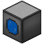

Shield Emitter
The Shield Emitter is used to direct and propel Ionized Particles in order to create a shielded surface.
As of v0.7.0 they can no longer be placed freely, being only admissible (in)directly connected to a single ShieldController or facing an emitter that is.They also can no longer be configured or fed with Ionized Particles, which is the role of their associated ShieldController.
Only the player who placed the Shield Emitter can remove it, by shift+clicking it with a wrench. If a Shield Controller is removed from the world all associated Shield Emitters are removed as well.